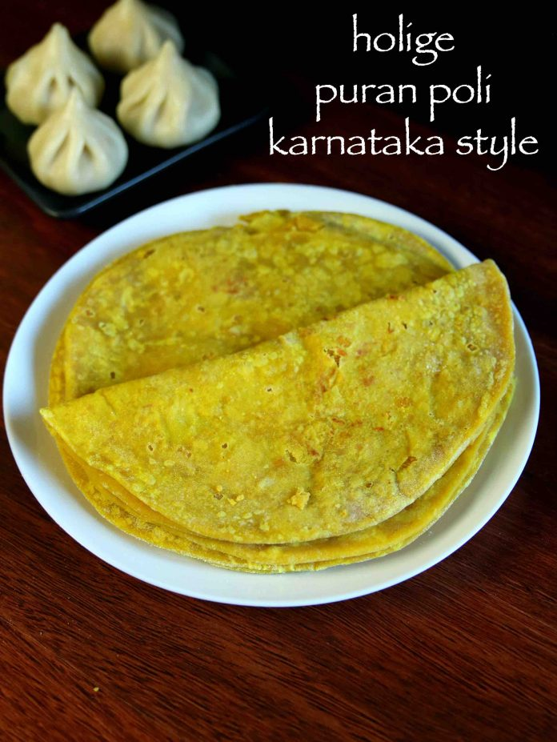

Holige-Recipe

holige
holige recipe | obbattu recipe | bele obbattu | puran poli karnataka style
holige recipe | obbattu recipe | bele obbattu | puran poli karnataka style with detailed photo and video recipe
basically a sweet flat bread recipe prepared mainly with all purpose flour with chana dal and jaggery stuffing. this is karnataka style puran poli recipe which slightly differs from the popular maharashtraian puran poli which is slightly thicker and uses less oil.
Ingredients
- 1 cup maida / plain flour / all purpose flour / refined flour
- tsp turmeric / haldi
- tsp salt
- cup water (or as required)
- up oil (to soak)
Steps :
- firstly, prepare the dough and filling.
- after the dough has rested for 3 hours, knead the dough slightly and pinch a small ball sized dough and flatten.
- place a ball sized prepared stuffing in center.
- bring the edges together and pinch off the excess dough securing tight.
- furthermore, dust the ball with rice flour and roll gently.
- roll in one direction making sure the holige / obbattu is thin.
- now put this rolled holige / obbattu / puran poli over hot tawa.
- allow to roast on medium flame for a minute or till bubbles appear.
- flip over and cook both sides pressing slightly.
- finally, serve holige / obbattu / puran poli with ghee / coconut milk / mango rasayana.